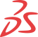
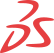
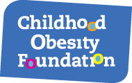
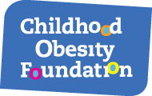

Gregory
Viner

Canada / Mexico (FM3)
gvinercareers@gmail.com / (647) 873-0636
linkedin.com/in/guy-viner / guyviner.github.io
CAREER OBJECTIVE
Versatile and well rounded young professional looking to continue developing a career in Product Management.
RELEVANT EXPERIENCE
 UnoZero Code | Mexico (Remote) 2021 Bilingual Project Manager
UnoZero Code | Mexico (Remote) 2021 Bilingual Project Manager 


- Managed a team of 6 cross-functional Mexican engineers, respecting Agile values, and adhering to Scrum methodologies.
- Lead the development of VR video games and Progressive Web Apps serving various industries.
- Conducted full-cycle IT consulting for United States based clients from assessing needs, discussing ideas, setting KPIs, to shipping triple-tested code.
- Worked alongside the CEO to devise strategies for future growth and expansion within Mexico.
 Moishe House | United States (Remote) 2017
Moishe House | United States (Remote) 2017
Full Stack Developer 


- Debugging and development across the entire stack, and technical liaison for company staff.
- Built and implemented multiple interfaces and dynamic web pages to serve the organization’s diverse needs.
- Researched and subsequently migrated the team to Trello from Jira which unlocked efficiencies and elevated development happiness.
 CanDesk | Canada 2013 – 2021
CanDesk | Canada 2013 – 2021
Founder 

 



 

- Led the initial mass-adoption of ergonomic standing desks in Canadian offices and educational institutions.
- Guided by Lean Startup methodologies and influenced by the 4-Hour Workweek, grew the company to 7 full-time equivalent employees, including sales, marketing, logistics, engineering, and IT.
- Launched the first Canadian brick & mortar standing desk showroom and trial center with funding and endorsement from the Ontario Ministry of Economic Development and the Vaughan Business and Entrepreneurship Centre.
 Dr. Charlene Zietsma | Canada 2014 – 2015
Dr. Charlene Zietsma | Canada 2014 – 2015
Research Assistant 


- Assisted principal investigator Dr. Charlene Zietsma research the “Challenges and Strategies in Managing Phase-Shifting Growth”.
- Conducted a wide range of research assistance tasks including primary research (data collection, participant recruitment, interviewing, transcribing, coding [NViVo], conferencing) and secondary research (statistical analysis and literature reviews).
 Dr. Marlys Christianson | Canada 2015 – 2016
Dr. Marlys Christianson | Canada 2015 – 2016
Research Assistant 


- Assisted Dr. Marlys Christianson study “The emergence and updating of shared understanding in teams during unexpected events”, a SSHRC funded study.
- Conducted a wide range of research assistance tasks including primary research (data collection, participant recruitment, interviewing, transcribing, coding [NViVo], conferencing) and secondary research (statistical analysis and literature reviews).
EDUCATION
 Schulich School of Business | Canada 2010
Schulich School of Business | Canada 2010
H. BBA
 University of Wales | Canada 2015
University of Wales | Canada 2015
M. Sc. Finance
 CodeCore Developer Bootcamp | Canada 2016
CodeCore Developer Bootcamp | Canada 2016
Certificate
SKILLS
- Excellent communication and team working skills
- Strong attention to detail and thoroughness
- Creative problem solving and challenging norms
- Exceptional researcher and fast learner
- Deep sense of integrity and confidentiality
PUBLICATIONS